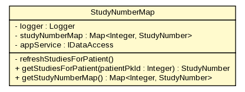

gov.nih.nci.ncia.lookup
Class StudyNumberMap

java.lang.Object
 gov.nih.nci.ncia.lookup.StudyNumberMap
gov.nih.nci.ncia.lookup.StudyNumberMap
public class StudyNumberMap
- extends java.lang.Object
Maps patient primary key to a StudyNumber object.
This is implicitly a singleton because it is an attribute of the ApplicationFactory.
The first time a search is done, this map is loaded up and used until the app goes down,
so any changes to the STUDY_SERIES_NUMBER view which underlies the StudyNumber toolkit object
won't be captured (is this on purpose?). Further, this loads the whole StudyNumber/STUDY_SERIES_NUMBER
view into memory.....
| Methods inherited from class java.lang.Object |
clone, equals, finalize, getClass, hashCode, notify, notifyAll, toString, wait, wait, wait |
logger
private static org.apache.log4j.Logger logger
studyNumberMap
private java.util.Map<java.lang.Integer,StudyNumber> studyNumberMap
appService
private IDataAccess appService
StudyNumberMap
public StudyNumberMap()
refreshStudiesForPatient
private void refreshStudiesForPatient()
getStudiesForPatient
public StudyNumber getStudiesForPatient(java.lang.Integer patientPkId)
throws java.lang.Exception
- Holds a cached HashMap of all the domain objects that have a patient and
the total number of studies and series. Will update the cache if the
patient is not found the first time, throws an exception the second time.
- Throws:
java.lang.Exception
getStudyNumberMap
public java.util.Map<java.lang.Integer,StudyNumber> getStudyNumberMap()